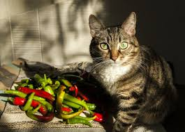
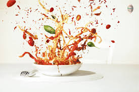

Check that Chili!
This is a pretty simple chili recipe, the prep is the hardest part. After prepping everything you need, you will brown that beautiful meat, then toss everything else in there to simmer a bit. It's too easy!
Ingredients
- 1 lb. ground beef
- 1 onion, chopped
- 1 (15oz.) can tomato sauce
- 1 (15oz.) can kidney beans
- 1 (14.5 ounce) can stewed tomatoes
- 1.5 cups water, or as needed (Optional)
- 1 tsp. chili poweder, or more to taste
- 1 pinch garlic powder
- salt and pepper to taste

Directions
- Place ground beef and onion in a large saucepan over medium heat; cook and stir until meat is browned and onion is tender, about 5 to 7 minutes.
- Stir in tomato sauce, kidney beans, and stewed tomatoes with juice. If you prefer a thinner consistency, you can add water. Season with chili powder, garlic powder, salt, and black pepper. Bring to a boil, reduce heat to low, cover and let simmer for 15 minutes.
